10月18日上午 | 开幕式 & Keynote (第一会议室)
主席 | 常象宇 魏太云
09:15 - 10:15TBD
刘军 | 美国科学院院士，清华大学统计与数据科学系教授
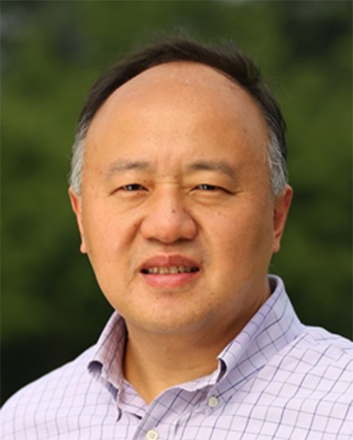
演讲内容摘要
本报告将探讨……
演讲嘉宾简介
刘军教授，美国科学院院士，一直从事于贝叶斯统计理论、蒙特卡洛方法、统计机器学习、状态空间模型和时间序列、生物信息学、计算生物学等方向的研究，并做出杰出贡献，对大数据处理和机器学习领域有深远影响。他于2002年获得考普斯会长奖（COPSS Presidents' Award，公认为国际统计学界的最高荣誉）； 2010年获得世界华人应用数学最高荣誉晨兴应用数学金奖（三年一度，不超过45岁）；2014年被ISI评为论文高频引用的数学家；2016年获得泛华统计协会许宝騄奖（三年一度，不超过51岁）；2004、2005年分别成为美国数理统计学会和美国统计学会会士（Fellow）；2022年当选国际计算生物学会会士。刘军教授还曾任美国统计协会会刊（JASA）联席主编及多个国际一流统计杂志副编等职。截至2025年5月，他在各类国际顶尖学术杂志（如Science，Nature，Cell，JASA，JMLR等）及书刊上发表论文300余篇和一本专著，被引用9万余次（Google scholar）。他已经指导了40多位博士生、30多位博士后。
10:30 - 11:30 LLaDA：扩散大语言模型新范式
文继荣 | 中国人民大学高瓴人工智能学院执行院长
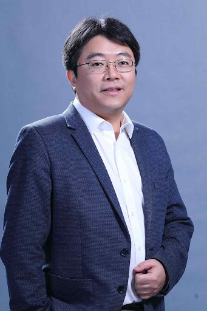
演讲内容摘要
本次报告聚焦一个问题：自回归是否是通向当前乃至更高水平的生成式智能的唯一范式？本次报告首先从统一概率建模的视角总结当前基础生成模型的发展，并从这个视角出发指出大语言模型的性质（如可扩展性、指令追随、情景学习、对话、无损压缩）主要来自于生成式准则，而非自回归建模独有。基于这些洞察，介绍扩散大语言模型LLaDA系列工作，包括基础理论、扩展定律、大规模训练、偏好对齐和多模态理解等。LLaDA通过非自回归的方式，展示了令人惊讶的可扩展性和多轮对话能力。这些结果不仅挑战了自回归的地位，更加深了我们对生成式人工智能的理解。
演讲嘉宾简介
文继荣，中国人民大学高瓴人工智能学院执行院长，国家高层次人才特聘专家。“大模型与智慧治理”北京市重点实验室主任，担任新一代智能搜索与推荐教育部工程研究中心主任。2018年入选首批“北京市卓越青年科学家”,2019年担任北京智源人工智能研究院首席科学家。目前担任中央统战部党外知识分子建言献策专家组专家、北京市第十四届政协常委、第八届教育部科技委委员、中国计算机学会常务理事等。
10月18日下午 | Agent
主席 | 张佳钇
13:00 - 13:30AReaL：智能体时代的强化学习系统
吴翼 | 清华大学交叉信息院助理教授
演讲内容摘要
强化学习与大模型的发展演进，以及需要面对的算法挑战。AReaL通过Agent优先的接口设计，以及全异步强化学习算法，让用户改动极少的代码就可以实现3-5x的智能体强化学习训练加速。
演讲嘉宾简介
吴翼博士，清华大学交叉信息院助理教授，博士生导师，前 OpenAI 研究员，WAIC2025云帆奖得主。博士毕业于加州大学伯克利分校，研究方向为强化学习。Google Scholar 引用超过 14000 次，曾获 NIPS 2016 best paper award，ICRA 2024 best demo award finalist。
13:30 - 14:00智能体强化策略优化
董冠霆 | 中国人民大学高瓴人工智能学院博士
演讲内容摘要
现有的轨迹级强化学习方法在训练智能体时忽略了工具调用后产生的高熵token分布，无法充分探索步骤级工具使用行为。ARPO通过熵驱动的自适应采样机制，在高熵工具使用步骤中动态分支采样，结合优势归因估计更好地学习工具交互行为。实验显示ARPO在13个基准测试中超越传统方法，且仅需一半工具调用预算。
演讲嘉宾简介
董冠霆，目前就读于中国人民大学高瓴人工智能学院，博士一年级，导师为窦志成教授和文继荣教授。他的研究方向主要包括大语言模型推理，深度搜索智能体，智能体强化学习等。以第一作者身份在 ICLR、ACL、AAAI 等顶级会议发表论文10余篇，并在快手大模型应用组、阿里通义千问组等大模型团队进行实习。代表性工作包括 AUTOIF、ARPO、RFT、Search-o1、WebThinker、Qwen2 和 Qwen2.5 等。个人主页：https://dongguanting.github.io/
14:00 - 14:30基础智能体的进展与挑战
于兆洋 | MetaGPT研究员
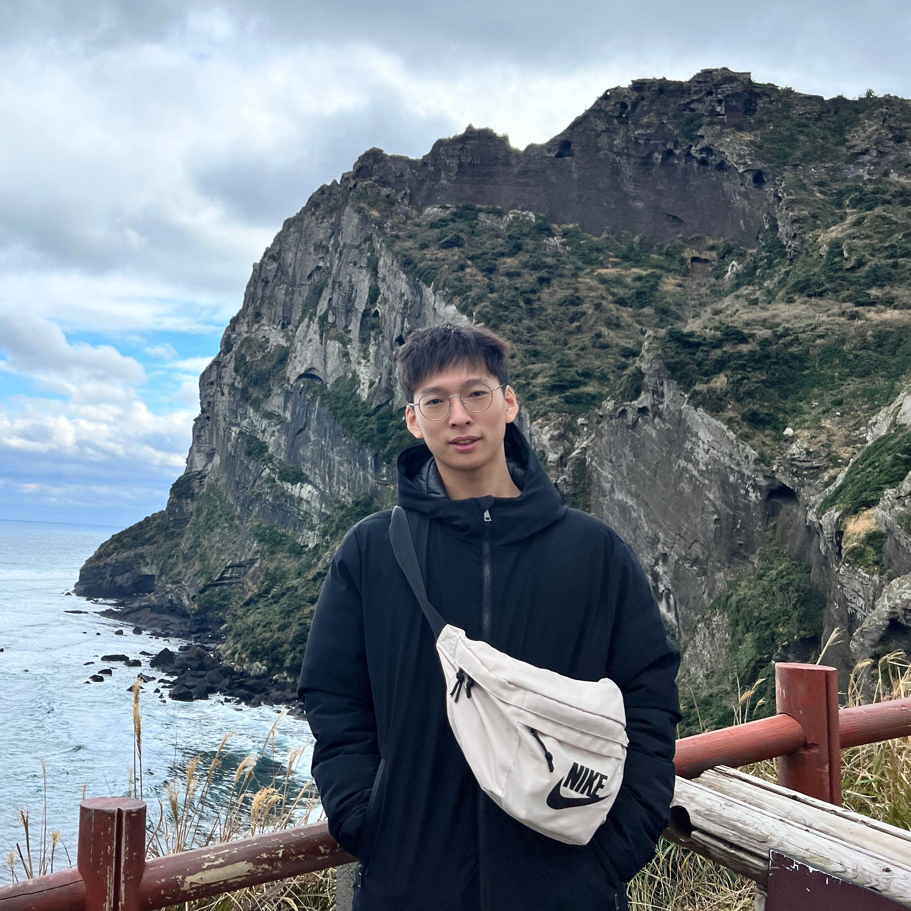
演讲内容摘要
现有智能体系统缺乏统一的理论框架和自我进化能力。本论文提出了一个受大脑启发的基础智能体架构，包含认知、记忆、感知、行动等核心模块，并探讨了智能体的自我优化机制和多代理协作模式。论文还分析了智能体系统面临的安全挑战，为构建智能且安全的智能体系统提供了系统性的理论指导。
演讲嘉宾简介
于兆洋，中国人民大学高瓴人工智能学院24届本科生，目前担任MetaGPT研究员。他的研究方向包括智能体形式，智能体自优化，智能体环境等。其开源项目OpenManus在Github上获得49K star，论文发表在ICLR，EMNLP等顶级会议上。个人主页：https://zhaoyangyu.com/
14:30 - 15:00TBD
李博杰

演讲内容摘要
演讲嘉宾简介
10月18日下午 | 多模态理解与生成
主席 | 胡天阳
13:00 - 13:30Faster Convergence and Acceleration for Diffusion-Based Generative Models
Gen Li | Department of Statistics and Data Science, Chinese University of Hong Kong
演讲内容摘要
Diffusion models, which generate new data instances by learning to reverse a Markov diffusion process from noise, have become a cornerstone in contemporary generative modeling. While their practical power has now been widely recognized, the theoretical underpinnings remain underdeveloped. Particularly, despite the recent surge of interest in accelerating sampling speed, convergence theory for these acceleration techniques remains limited. In this talk, I will first introduce an acceleration sampling scheme for stochastic samplers that provably improves the iteration complexity under minimal assumptions. The second part focuses on diffusion-based language models, whose ability to generate tokens in parallel significantly accelerates sampling relative to traditional autoregressive methods. Adopting an information-theoretic lens, we establish a sharp convergence theory for diffusion language models, thereby providing the first rigorous justification of both their efficiency and fundamental limits.
演讲嘉宾简介
Gen Li is currently an assistant professor in the Department of Statistics and Data Science at the Chinese University of Hong Kong. His research interests include diffusion based generative model, and reinforcement learning.
13:30 - 14:00 On the Mechanism Interpretability of LLM for Fine-tuning and Reasoning
Difan Zou | Computer Science Department and Institute of Data Science, HKU
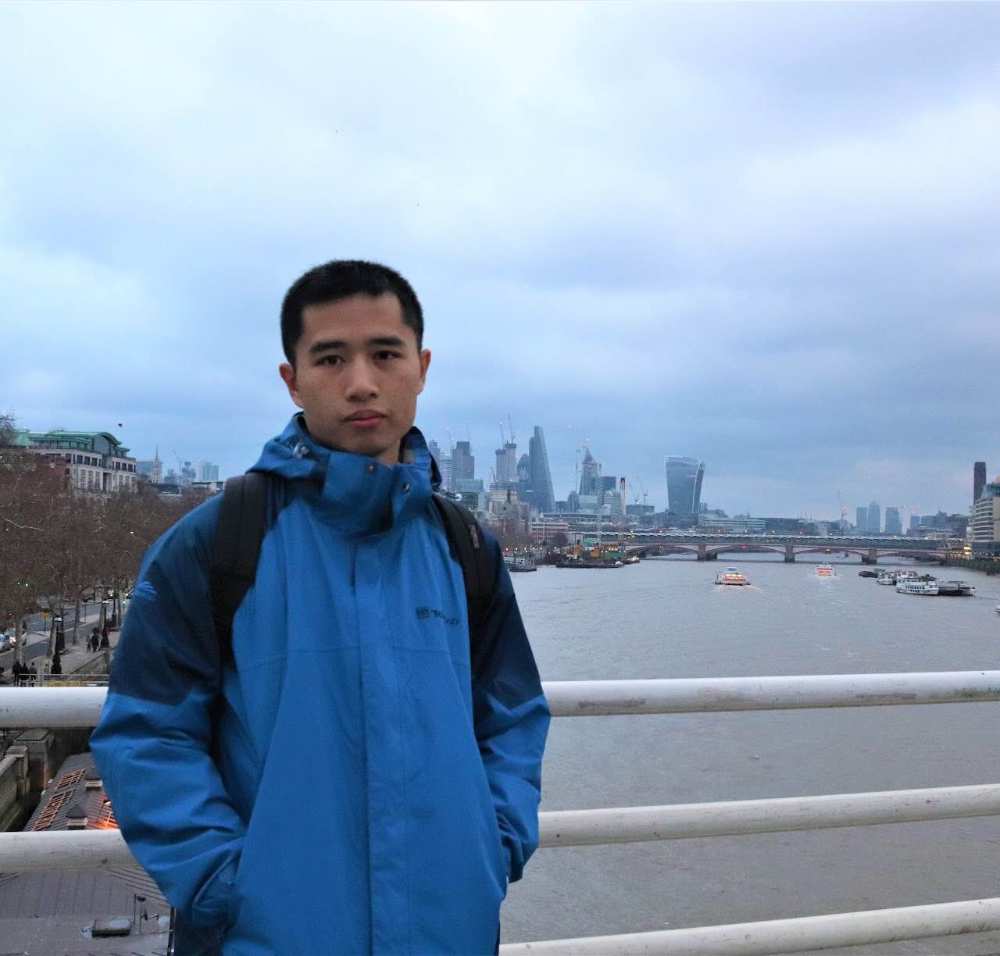
演讲内容摘要
While Reinforcement Learning (RL) and Fine-Tuning demonstrably enhance Large Language Model (LLM) capabilities, particularly in reasoning and task adaptation, the underlying mechanisms remain poorly understood. This talk integrates insights from two complementary studies to advance mechanistic interpretability. First, we dissect Reinforcement Learning with Verifiable Rewards (RLVR), revealing its core benefit lies in optimizing the selection of existing high-success-rate reasoning patterns, with theoretical convergence analyses showing distinct dynamics for strong versus weak initial models (mitigated by prior supervised fine-tuning). Second, we employ circuit analysis to interpret fine-tuning mechanisms, uncovering that circuits undergo significant edge changes rather than merely adding components, contrasting prior findings. Leveraging this, we develop a circuit-aware LoRA method, improving performance over standard LoRA by 2.46%. Furthermore, we explore combining circuits for compositional tasks. Together, these studies provide novel theoretical and empirical insights: RL enhances reasoning primarily through pattern selection, while fine-tuning fundamentally rewires circuit connections. This deeper understanding informs the design of more effective and interpretable adaptation strategies for LLMs.
演讲嘉宾简介
Dr.Difan Zou is an assistant professor in computer science department and institute of data science at HKU. He has received his PhD degree in Department of Computer Science, University of California, Los Angeles (UCLA). His research interests are broadly in machine learning, deep learning theory, graph learning, mechanism interpretation, and interdisciplinary research between AI and other subjects. His research is published in top-tier machine learning conferences (ICML, NeurIPS, COLT, ICLR) and journal papers (IEEE Trans., JMLR, Nature Comm., PNAS, etc.). He serves as an area chair/senior PC member for NeurIPS, ICML and AAAI, and PC members for ICLR, COLT, etc.
14:00 - 14:30 基于昇腾的多模态理解大模型算法探索
洪蓝青 | 华为诺亚方舟实验室多模态大模型技术专家
演讲内容摘要
本报告将系统介绍在昇腾平台上开展的多模态理解大模型训练与算法探索。内容涵盖昇腾亲和的视觉编码器设计、离散化语音编码器设计，以及面向大规模训练的数据格式规范与高效数据处理流程。在模型训练方面，报告将重点探讨基于数千卡集群的高效多模态对齐方法，涉及模态对齐的范式选择与具体实现。通过这些系统性的研究与实践，我们总结了多模态大模型在昇腾平台上的关键Know-how，为实现高效、稳定、可扩展的多模态理解模型训练提供参考。
演讲嘉宾简介
洪蓝青博士现任华为诺亚方舟实验室多模态大模型技术专家，博士毕业于新加坡国立大学。其研究方向聚焦于多模态大模型与生成式人工智能，主要探索现有大模型的优势与不足，挖掘能力边界，并提出高效的新一代模型与算法。她在人工智能领域的顶级国际会议上发表论文30余篇，Google Scholar引用次数超过3500次，曾担任NeurIPS、ICLR、CVPR等会议审稿人，并担任IJCAI 2025的领域主席（Area Chair）以及3DV 2025的产业主席（Industrial Chair）
14:30 - 15:00 多模态生成与理解：数据与建模方法的演化
罗维俭 | 小红书人文智能实验室
演讲内容摘要
过去十年，多模态生成经历了从 VAE/GAN ，自回归模型（AR Models），到扩散模型（Diffusion Models）的演化与放大（Scaling）；近两年多模态生成技术又与大语言模型深度耦合，形成多模态理解与多模态生成相结合的智能系统。在多模态智能迅速演进的进程中，高质量的数据和可扩展的建模方法成为了模型进步的两个重要方面。本报告以文-图多模态场景为例子，首先将从数据和建模方法的角度出发，系统梳理多模态生成模型的历史演进。我们将涵盖自回归模型，扩散模型和单步/少步生成模型等主流模型架构，并比较各个模型方案的利弊。同时我们将简要梳理介绍对生成模型友好的现有开源数据集；其次，我们将重点讨论一个研究热点问题，即多模态生成与多模态理解的关系，囊括了多模态生成理解一体化的一些近期工作以及报告者自身的一些思考，如生成理解之间的抑制与促进关系，生成理解模型的放大策略等。最后，我们将对多模态生成模型的未来演化方向做一个展望，并尝试归纳出一些重要的研究问题和应用场景。
演讲嘉宾简介
罗维俭博士是小红书（RedNote/Xiaohongshu）公司人文智能实验室（hi-lab）的多模态大模型研究员。他在北京大学（PKU）数学科学学院获得统计学博士学位和应用统计学硕士学位，本科阶段则毕业于中国科学技术大学（USTC）数学系，获数学学士学位。
维俭目前在人文智能实验室进行大型生成式理解模型等研究，其团队专注于开发高效可扩展的生成式理解模型，这类模型能够进行推理、理解人类意图，并实时生成视觉 - 音频响应。维俭在人工智能学术会议与期刊如ICML，NeurIPS，ICLR，CVPR，TMLR等发表论文十余篇。他曾邀担任前沿人工智能期刊如Nature Communications（Nat. Com），Journal of Machine Learning Research（JMLR），IEEE Transactions on Image Processing（TIP），Pattern Recognition（PR）等杂志审稿人。同时，他也参与人工智能会议审稿，包括 NeurIPS、ICML、ICLR、CVPR、ICCV、AISTATS、UAI 等。
10月18日下午 | Agent的产业应用
主席 | 冯俊晨
15:30-16:00Data Agent在业务数据分析中性能调优实践
赵健博 | 字节跳动资深技术专家
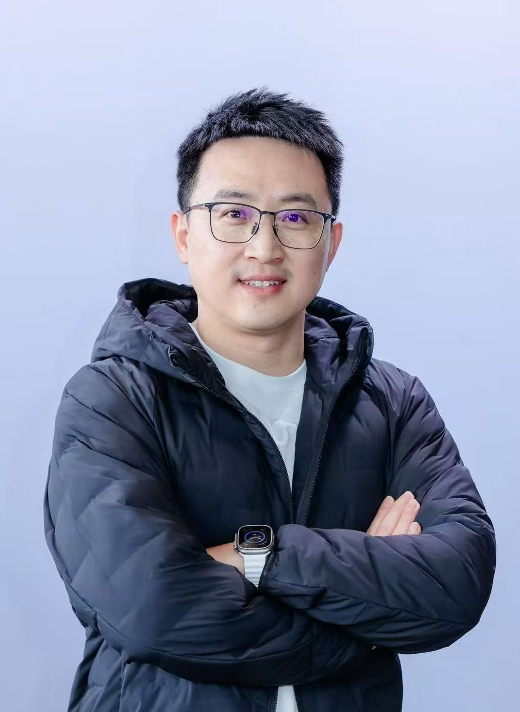
演讲内容摘要
从 ChatBI 到 Data Agent，分析工具正从交互式报表向自主智能分析演进。Data Agent 利用 LLM 实现深度的知识整合、自主分析推理和动态决策，相比传统分析工具在效率与深度上具备明显优势。本议题将介绍 Data Agent 的工程架构与调优方法论，并结合零售等场景的归因分析实践，展示如何实现性能优化。最后，将展望 Data Agent 未来的技术发展。
演讲嘉宾简介
赵健博，现任字节资深技术专家，深耕数据领域多年，积累了丰富的企业级实践经验。当前专注于以大语言模型为代表的AI技术在数据分析与决策场景中的创新应用，致力于构建覆盖全场景、具备自主决策与自适应能力的Data Agent，推动数据驱动从自动化迈向智能化
16:00-16:30 Agentic AI 如何赋能企业提效以及成功案例分享
范兆然
演讲内容摘要
拥有多个行业头部品牌大模型应用落地经验专家，为你分享在当下模型能力以及市场背景下，AI再企业内最好的应用形态以及各头部企业的成功落地案例
演讲嘉宾简介
范兆然，曾任句子互动产品总监，主导规划在线教育、零售、电商等多个行业的AI营销转型项目（如海底捞、量子之歌、快鱼、欧莱雅等）。设计并构建“Agentic 数字员工平台”，实现AI在企业销售、客服、社群运营等场景下的高效赋能。具备多种AI+技术融合的探索与落地经验，探索并实践了AI与CDP、RPA、内容中台等多种技术的融合模式，推动AI从能力到系统性平台的落地转化
16:30-17:00 AI在教育行业的落地和实践
张镎 | 微软（中国）高级解决方案专家
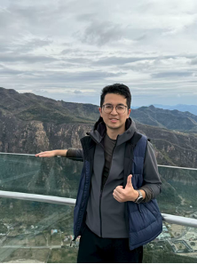
演讲内容摘要
探索AI如何赋能教育，从智能教学到个性化学习，分享行业落地案例与实践经验，助力教育创新升级。
演讲嘉宾简介
张镎，微软（中国）高级解决方案专家，专注于教育行业的AI应用实践与数字化转型，拥有20余年IT行业经验。加入微软前，曾任AWS高级产品经理与技术客户经理。
10月18日下午 | 大模型基础理论
主席 | 滕佳烨
15:30-16:00大模型推理机制分析
刘勇 | 高瓴人工智能学院长聘副教授
演讲内容摘要
近年来，大模型推理算法在效率与性能方面实现显著突破，推理速度与准确率得以大幅提升。但算法创新的热潮背后，对大模型推理内在机制的系统性探究仍显不足，致使其推理能力的认知存在诸多盲区。本报告从 "外部慢思考" 与 "内部慢思考" 双维度切入，着重剖析大模型外部推理的能力边界，以及长思维链对内部推理机制的影响，旨在为后续推理算法的优化设计夯实理论基础，突破技术桎梏，推动大模型推理能力实现新的跨越。
演讲嘉宾简介
刘勇，中国人民大学，长聘副教授，博士生导师，国家级高层次青年人才。长期从事机器学习基础理论研究，共发表论文100余篇，其中以第一作者/通讯作者发表顶级期刊和会议论文近50篇，涵盖机器学习领域顶级期刊JMLR、IEEE TPAMI、Artificial Intelligence和顶级会议ICML、NeurIPS等。曾获中国人民大学"杰出学者"、中国科学院"青年创新促进会"成员、中国科学院信息工程研究所"引进优青"等称号。主持/参与国家自然科学面上/基金青年、科技部重点研发、北京市科技计划中央引导地方专项、北京市面上项目等项目。
16:00-16:30随机梯度下降算法在高维回归问题中正则效应与泛化性能分析
方聪 | 北京大学智能学院助理教授
演讲内容摘要
随机梯度下降算法是求解机器学习问题中的常见算法。在高维学习问题中，随机梯度下降算法的迭代次数往往低于模型参数量，算法对于模型的产生隐式正则效应是模型具有良好泛化的主要原因。本次讲座，我们将研究随机梯度下降算法在不同学习情境下求解简单模型的泛化性能，并进行定量比较。我们将分别讨论算法在不同学习尺度（即样本数与问题维度不同依赖关系）与协变量偏移条件下的学习效率，尝试理解算法对于学习问题的适应性与涌现发生的条件。理论将启发设计内存节约大模型训练算法，在GPT2等标准测试平台取得更优性能。
演讲嘉宾简介
方聪，北京大学智能学院担任助理教授（博导）、研究员、博雅青年学者。方聪于2019年在北京大学获得博士学位，先后在普林斯顿大学和宾夕法尼亚大学进行博士后研究。方聪的主要研究方向是机器学习基础理论与算法，已发表包括PNAS、AoS、IEEE T.IT、JMLR、COLT、NeurIPS、PIEEE 等30余篇顶级期刊与会议论文，担任机器学习顶级会议NeurIPS、ICML领域主席（Area Chair），团队获得2023年度吴文俊人工智能自然科学奖一等奖。
16:30-17:00大模型对齐中的弱到强泛化机理研究
汪子乔 | 同济大学计算机科学与技术学院助理教授
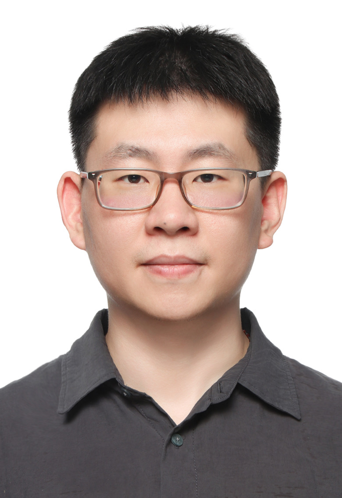
演讲内容摘要
在当前大模型对齐研究中，一个备受关注的现象是弱到强泛化（Weak-to-Strong Generalization, W2SG），即通过弱教师模型生成伪标签，指导强学生模型进行训练，从而实现学生在目标任务中反超教师的现象。尽管这一现象已被实证观察到，但其理论机理仍未被充分揭示。本报告围绕W2SG的理论分析展开，重点在于用Bregman散度下的广义偏差-方差分解刻画学生与教师之间的风险差异，首次在不依赖假设空间凸性这一强假设的前提下，推导出基于"预测不匹配"的W2SG不等式。我们进一步理论证明对于容量足够大的学生模型，W2SG现象更有可能出现。与此同时，我们发现适度的正则化或早停对于避免学生模型过度拟合教师标签是必要的。此外，在W2SG损失函数选择方面，我们理论上比较了标准交叉熵与反向交叉熵在W2SG场景下的表现，指出后者在面对教师预测不确定性时更加稳健。最后，我们通过实证分析验证了上述理论发现，包括学生模型容量对W2SG的影响，以及来自多个教师模型的平均监督对提升学生性能的作用。
演讲嘉宾简介
汪子乔，同济大学计算机科学与技术学院助理教授。研究方向为机器学习基础理论、统计学习原理以及信息论。近几年主要成果发表在人工智能、机器学习及数据挖掘等相关领域国际顶级会议，涵盖NeurIPS、ICML、ICLR、UAI、AAAI、KDD、WWW等，博士论文被提名2025年加拿大人工智能协会最佳博士论文奖，以及提名2025年渥太华大学总督学术奖章和Pierre Laberge论文奖。曾担任IEEE North American School of Information Theory (NASIT) 2024联合程序主席。
17:00-17:30Efficient and Fast Training with new Zero-th order Hybrid Optimizer
Ziye Ma | City University of Hong Kong Presidential Assistant Professor
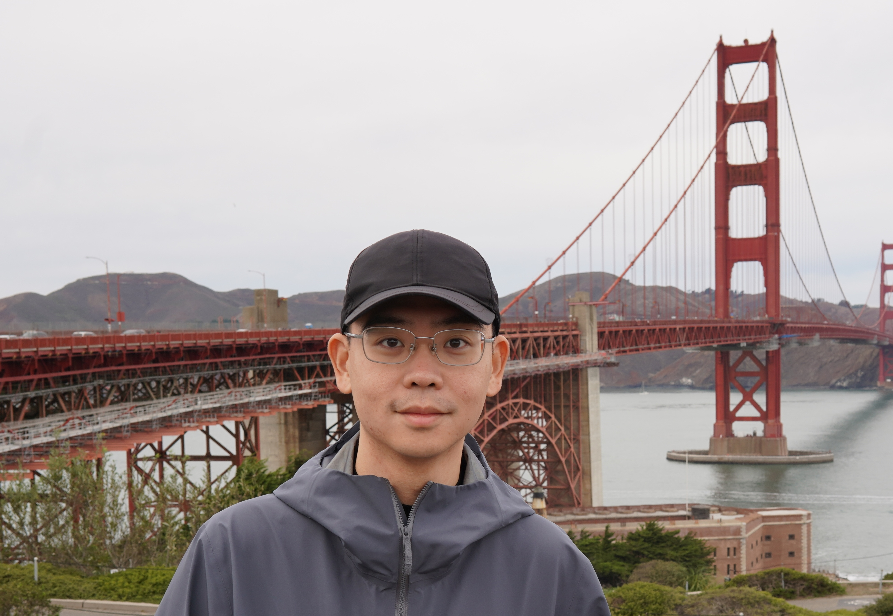
演讲内容摘要
Optimizing large-scale nonconvex problems, common in machine learning, demands balancing rapid convergence with computational efficiency. First-order (FO) stochastic methods like SVRG provide fast convergence and good generalization but incur high costs due to full-batch gradients in large models. Conversely, zeroth-order (ZO) algorithms reduce this burden using estimated gradients, yet their slow convergence in high-dimensional settings limits practicality. We introduce VAMO (VAriance-reduced Mixed-gradient Optimizer), a stochastic variance-reduced method combining FO mini-batch gradients with lightweight ZO finite-difference probes under an SVRG-style framework. VAMO's hybrid design uses a two-point ZO estimator to achieve a dimension-agnostic convergence rate of $\mathcal{O}(1/T + 1/b)$, where $T$ is the number of iterations and $b$ is the batch-size, surpassing the dimension-dependent slowdown of purely ZO methods and significantly improving over SGD's $\mathcal{O}(1/\sqrt{T})$ rate. Additionally, we propose a multi-point ZO variant that mitigates the $O(1/b)$ error by adjusting number of estimation points to balance convergence and cost, making it ideal for a whole range of computationally constrained scenarios. Experiments including traditional neural network training and LLM finetuning show VAMO outperforms established FO and ZO methods, offering a faster, more flexible option for improved efficiency.
演讲嘉宾简介
The speaker Ziye Ma is currently a presidential assistant professor in the computer science department at the City University of Hong Kong. Prior to this, he completed his PhD in the EECS department at UC Berkeley under the guidance of Somayeh Sojoudi and Javad Lavaei. His research is mostly focused on machine learning theory and AI foundation, with a particular emphasis on non-convex optimization. His works have received several oral designations in top ML conferences, and he has received the early career scheme from research grant council (RGC) of Hong Kong.
10月19日上午 | AI4Science
主席 | 许洪腾
9:00-9:30An SE(3)-Transformer for Molecular Conformation Optimization Driven by Wasserstein Gradient Flows
许洪腾 | 高瓴人工智能学院长聘副教授
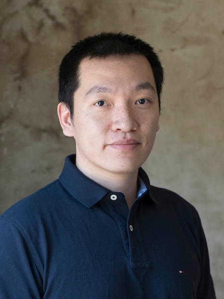
演讲内容摘要
Predicting molecular ground-state conformation (i.e., energy-minimized conformation) is crucial for many chemical applications such as molecular docking and property prediction. Classic energy-based simulation is time-consuming when solving this problem, while existing learning-based methods have advantages in computational efficiency but sacrifice accuracy and interpretability. In this work, we propose a novel and effective method to bridge the energy-based simulation and the learning-based strategy, which designs and learns a Wasserstein gradient flow-driven SE(3)-Transformer, called WGFormer, for ground-state conformation prediction. Specifically, our method tackles this task within an auto-encoding framework, which encodes low-quality conformations by the proposed WGFormer and decodes corresponding ground-state conformations by an MLP. The architecture of WGFormer corresponds to Wasserstein gradient flows -- it optimizes conformations by minimizing an energy function defined on the latent mixture models of atoms, thereby significantly improving performance and interpretability. Extensive experiments demonstrate that our method consistently outperforms state-of-the-art competitors, providing a new and insightful paradigm to predict ground-state conformation.
演讲嘉宾简介
许洪腾，高瓴人工智能学院长聘副教授，博导。2017年博士毕业于佐治亚理工学院，2013年硕士毕业于上海交通大学，2010年本科毕业于天津大学。其研究方向为通用人工智能技术及其应用，特别是（1）最优传输驱动的机器学习理论与方法；（2）生成式大模型架构设计、模型压缩、模型融合；（3）AI4Math以及AI4Science等前沿应用。以第一作者或通讯作者身份在人工智能领域知名会议和期刊上发表论文70余篇，并曾在AAAI、IJCAI等会议上针对最优传输与机器学习组织Tutorial和研讨会等活动。近年来的代表性工作包括基于最优传输距离的图神经网络设计与学习方法、数值算法驱动的大模型架构设计与高效适配、基于生成式人工智能的柔性大分子建模技术等。
9:30-10:00TBD
兰艳艳 | 清华大学万国数据教授，智能产业研究院（AIR）首席研究员
演讲内容摘要
TBD
演讲嘉宾简介
兰艳艳，清华大学万国数据教授，智能产业研究院（AIR）首席研究员，博士生导师，她的研究方向为机器学习、信息检索和AI for Science。在人工智能领域重要国际期刊和会议上发表论文80余篇，Google Scholar引用超过10000次。获得人工智能领域顶级国际会议SIGIR最佳学生论文奖， CIKM最佳论文Runner-Up奖，面向基因调控的AI基础大模型发表于Nature正刊，所研发的AIRFold获得国际蛋白质结构预测比赛CAMEO全球冠军。入选国家高层次青年人才计划，中国科学院青年创新促进会优秀会员，北京智源人工智能研究院青年科学家，获得中文信息学会钱伟长中文信息处理科学技术奖一等奖、青年创新奖。兰艳艳博士曾担任AI领域多项国际重要会议的PC Chair和Area Chair，并担任人工智能领域顶级国际期刊AI Journal副主编。她还是中国计算机学会高级会员，中文信息学会信息检索专委会秘书长，应用数学学会通信与数学专委会副主任。
10:00-10:30TBD
魏哲巍 | 中国人民大学高瓴人工智能学院副院长

演讲内容摘要
TBD
演讲嘉宾简介
魏哲巍，中国人民大学高瓴人工智能学院副院长，教授，博导。入选国家高层次青年人才，担任新一代智能搜索与推荐教育部工程研究中心副主任。2008年本科毕业于北京大学数学科学学院，2012年博士毕业于香港科技大学计算机系。研究方向为图计算与图学习、数据流算法与学习。在SIGMOD、KDD、ICML、STOC等会议及期刊发表论文100余篇，获得PODS2022时间检验奖、2023年世界人工智能大会青年优秀论文提名奖、VLDB2024最佳论文提名奖。主持自然科学基金重点项目、科技部新一代人工智能国家科技重大专项课题。担任IEEE TPAMI编委、FCS青年编委；担任PODS、ICDT等会议论文集主席以及ICML、NeurIPS、ICLR等会议领域主席；担任琶洲实验室（黄埔）青年科学家。培养博士生获百度奖学金、微软学者、CCF优博等奖项。
10:30-11:00TBD
高志锋 | 深势科技

演讲内容摘要
TBD
演讲嘉宾简介
TBD
11:00-11:30Panel
10月19日上午 | 具身智能
主席 | 许华哲
9:00-11:30TBD
许华哲

演讲内容摘要
TBD
演讲嘉宾简介
TBD
10月19日下午 | 生物医药统计
主席 | 俞声 王健桥
13:00-13:30基于大模型的电子病历结构化与医学本体建设
俞声 | 清华大学统计与数据科学系长聘副教授
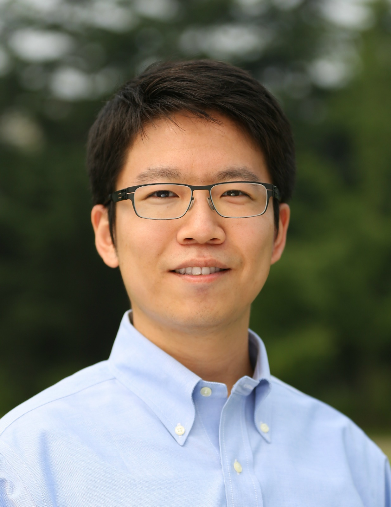
演讲内容摘要
电子病历包含患者诊疗过程中的丰富医学信息，通过自动化信息提取并对术语进行标准化，转化为规范的结构化数据，可以为医学研究与临床自动化提供丰富的数据支持、大幅降低人力成本、提高科研数据采集与医院管理效率。然而，真实的临床病历用语高度个性化、存在大量简称和非标准表达，电子病历的结构化、标准化对自然语言处理工具和基础设施都是巨大挑战。本报告将介绍利用大模型中的庞大背景知识，实现电子病历的准确理解，并在其术语抽取的基础上，利用大模型实现大规模数据驱动的医学本体自动化建设。
演讲嘉宾简介
俞声，清华大学统计与数据科学系长聘副教授。研究方向为医学文本类智能，包括自然语言处理、大型语言模型、知识图谱、搜索引擎、电子病历分析等。俞声与哈佛大学蔡天西教授合作发明的高通量表型提取技术使疾病表型识别算法开发速度提高千倍，应用于"Million Veteran Program"等美国国家级精准医学研究项目以及Mass General Brigham等医院的生物样本库、科研患者注册库建设。俞声主持开发了拥有2210万概念、4602万中英文术语、9985万关系三元组的"生物医学信息学本体系统"BIOS，体量达到美国"统一医学语言系统"UMLS的数倍。俞声与蔡天西教授于2014年发布了电子病历自然语言处理系统NILE，被10个国家和地区的医学研究机构和学者使用；2024年，俞声与蔡天西、Isaac Kohane课题组联合发布中英文电子病历结构化大模型GENIE。俞声获评国家青年拔尖人才，现任JASA Associate Editor。
13:30-14:00深度学习赋能的药物发现与开发
符天凡 | 南京大学计算机学院副教授
演讲内容摘要
药物设计和开发是一个既漫长又昂贵的过程，涉及从分子发现到临床试验的多个复杂步骤。人工智能（AI）技术展示了巨大的潜力，可以显著加速这一过程并降低成本。在药物发现的初期阶段，目标是识别具备理想药理特性的分子。本报告将深入探讨最新的药物设计方法，包括连续空间深度生成模型和离散空间药物设计路径搜索算法。这些先进的AI工具能够高效地探索化学空间，预测新化合物的活性和安全性，并优化候选药物的设计，以满足特定的治疗需求。进一步讲，在药物开发的后期阶段，重点转向了临床试验，这是评估药物对人体安全性和有效性的重要环节。为了提高临床试验的成功率和效率，本报告将介绍一系列最新的可信赖的方法，包括可解释性、不确定性感知的临床试验设计与预测技术。这些方法不仅能够模拟真实的临床试验过程，还能帮助科学家更好地理解潜在的风险和收益，从而做出更加明智的决策。
演讲嘉宾简介
符天凡，现任南京大学计算机学院副教授，长期从事人工智能赋能的药物发现（AI for Drug）、人工智能赋能的科学发现（AI for Science）方面的研究。他本科硕士毕业于上海交通大学计算机科学与技术系，博士毕业于美国佐治亚理工学院计算机科学与工程系。曾任美国伦斯勒理工学院计算机科学系常任轨道助理教授。2024年12月加入南京大学计算机科学与技术系，入选国家级青年人才项目。他在Nature、Nature Chemical Biology、Nature Machine Intelligence、Nature Scientific Data、Foundations and Trends in Machine Learning、ICML、ICLR、NeurIPS、KDD、TKDE等知名会议和期刊上发表学术论文40余篇。论文被国内外同行广泛引用（谷歌学术引用量达到5000余次），引用者来自斯坦福、麻省理工、哈佛、耶鲁、普林斯顿等国际著名机构，包括中、美、英、加、欧等国/地的20余位科学院/工程院院士和50余位AAAI/ACM/IEEE Fellow。2017年翻译了深度学习（“花书”），销量达50余万册。研究成果应用于多家生物医药企业。他还共同组织了前三届AI for Science研讨会。
14:30-15:00Multivariate Conformal Prediction for Brain Volumetry From Accelerated MRI
Huaqing Jin | 清华大学统计与数据科学系助理教授

演讲内容摘要
Accelerated Magnetic Resonance Imaging (MRI) is essential for clinical practice but introduces uncertainty into brain volumetry. We propose a framework combining the semiparametric modelling with Multivariate Conformal Prediction (MCP) to generate statistically-guaranteed prediction sets for brain regions volumes.Our model-agnostic approach provides rigorous uncertainty bounds without making distributional assumptions. Integrating the method with the reconstruction and segmentation algorithms, a pipeline is developed to construct prediction sets directly from the k-space downsampled MRI measurements. The pipeline is validated on the Alzheimer's Disease Neuroimaging Initiative (ADNI) dataset, demonstrating its effectiveness. This work provides a practical tool to enhance the reliability of volumetric biomarkers from accelerated MRI scans.
演讲嘉宾简介
Huaqing Jin is an assistant professor in the department of statistic and data science at Tsinghua University. He completed his postdoctoral training at the University of California, San Francisco (UCSF) and earned his PhD degree in statistics from the University of Hong Kong. His research focuses on high-dimensional statistics, change point detection, and Bayesian statistics, with a particular emphasis on applications in neuroimaging data analysis and clinical trials.
15:00-15:30Features fusion or not: harnessing multiple pathological foundation models using Meta-Encoder for downstream tasks fine-tuning
俞章盛 | 上海交通大学医学院临床研究中心主任
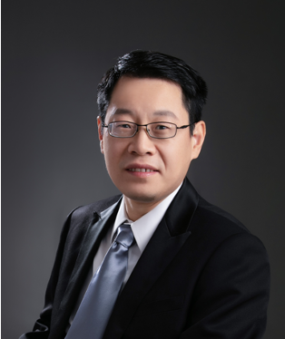
演讲内容摘要
The emergence of diverse pathological foundation models has empowered computational pathology tasks, including tumor classification, biomarker prediction, and gene expression prediction. However, variations in model architecture and data sources lead to inconsistent downstream performance and complicate centralized training. Specifically, the lack of data sharing makes retraining foundation models with pooled data infeasible. Alternatively, the release of model parameters enables combining multiple models during fine-tuning. Inspired by the meta-analysis method, we propose the Meta-Encoder framework, which integrates features from multiple foundation models to generate a comprehensive representation, improving downstream fine-tuning task performance. Comparative experiments demonstrate that Meta-Encoder is more effective than individual foundation models, with its strengths more pronounced in handling complex tasks. While single models may perform sufficiently well for simple tasks, Meta-Encoder can match or even surpass the best-performing single model, alleviating concerns over model selection. Moderately challenging tasks benefit from Meta-Encoder's concatenation or self-attention strategies, with the latter demonstrating superior performance in more challenging scenarios. For highly complex tasks, such as high-dimensional gene expression prediction, self-attention proves to be the most effective Meta-Encoder strategy, balancing feature integration and computational efficiency. For three patch-level spatial gene expression prediction tasks (HEST-Benchmark, CRC-inhouse, and Her2ST), the self-attentionstrategy improved the Pearson correlation by 38.58%, 26.06%, and 20.39%, respectively, compared to the average performance of three patch-level single models. Similarly, for the TCGA-BRCA, TCGA-NSCLC, and TCGA-CRC WSI-level bulk gene expression prediction tasks, the Pearson correlation increased by 14.36%, 9.27%, and 42.55%, respectively, compared to the average performance of two WSI-level single models. By leveraging multiple pathological foundation models using Meta-Encoder, it can further improve molecular characterization in pathology images to advance precision oncology.
演讲嘉宾简介
俞章盛，上海交通大学医学院临床研究中心主任，上海交通大学长聘教授、博士生导师，耶鲁大学公共卫生学院生物统计学系客座教授，上海市海外高层次特聘专家，上海市优秀学术带头人。此前，他在密西根大学获得生物统计学博士。他在JAMA, Journal of Hematology and Oncology, Nature Communication, Biometrika, 等发表论文100余篇，任Statistics in Medicine副主编，Heart Rhythm统计编辑，Pediatric Pulmonology编委。他的统计方法研究包括基于统计及深度学习方法的医疗影像处理与预测模型、生存分析方法、临床试验方法，医学合作研究包括儿童发育，肾脏病，疼痛、肿瘤。
10月19日下午 | AI赋能制药统计
主席 | 李扬 吕晓玲
15:30-15:55临床试验方案的AI辅助撰写、数字化与自动化
Alex Goh | 百济神州产品管理副总监
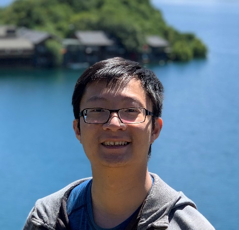
演讲内容摘要
Clinical study protocols serve as foundational documents for trial execution but typically exist in non-machine-readable formats, creating barriers to system integration and data exchange. Traditional protocol development is labor-intensive, error-prone, and constrained by tight timelines. This presentation demonstrates how artificial intelligence can revolutionize protocol development through digitalization and clinical content reuse. AI-driven implementation increases quality in a tight timeline while maintaining regulatory compliance. Digital protocols enable seamless integration with electronic systems and automate document generation, reducing manual data entry and minimizing transcription errors. This transformative technology addresses critical industry challenges, and establishes foundations for accelerated drug development while improving patient outcomes through more efficient clinical trial execution.
演讲嘉宾简介
Alex Goh 现任百济神州产品管理副总监，负责将先进的数据科学与人工智能能力融入全球临床研究运营；他拥有计算机科学博士、硕士和学士学位，并发表23篇同行评议论文，兼具深厚技术背景与逾十年的产品领导经验。Alex Goh博士主导数字化研究方案与临床内容复用项目，显著缩短试验启动周期、简化监管申报流程，并提高组织的 AI 赋能水平。此前，他在澳大利亚医保基金担任高级数据科学家兼产品经理，建立会员流失预测与未决赔付深度学习模型，为高层决策提供数据支撑并获澳大利亚审慎监管局认可。他的职业起点源于人体姿势控制的脑电跨学科研究，如今将其严谨方法学转化为可执行的产品路线图，带领跨职能团队推进数据驱动创新，改善患者获益并提升运营效率；他擅长分享机器学习与产品思维加速药物开发的实践经验。
15:55-16:20MAGIC：多智能体疑难肝病智能诊疗新方法
林毓聪 | 北京理工大学光电学院特别副研究员
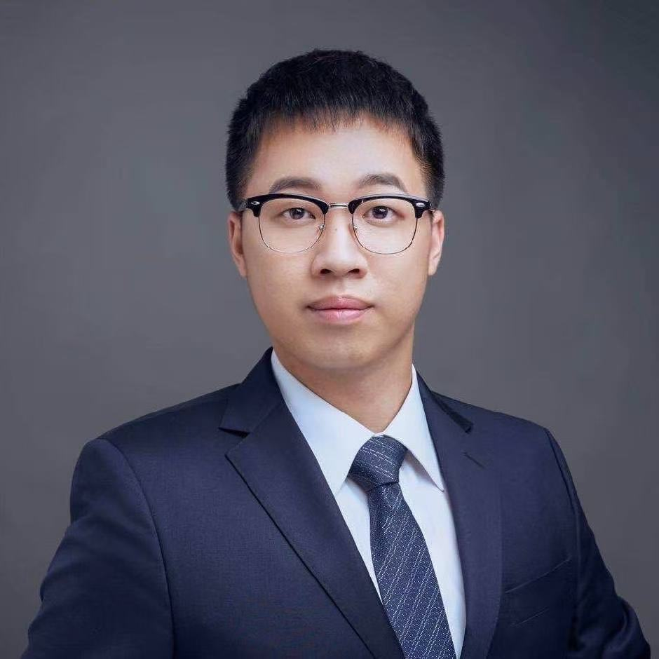
演讲内容摘要
Large language models (LLMs) perform well in general medical fields, but their effective application in complex liver disease diagnosis remains an open question. We propose an LLM-based Multi-agent Activated Graph-reasoning Intelligent Collaboration (MAGIC) model to address this challenge. MAGIC enhances liver disease knowledge through multi-scale analysis, including similar case studies, abnormal indicator identification, and knowledge graph analysis. During the simulated clinical progressive diagnostic process, the model adjusts key nodes and relationship weights in the graph reasoning using multi-agent debate results, improving pre-diagnosis accuracy. Meanwhile, the model verifies the pre-diagnosis results with guidelines to ensure their alignment with established clinical standards, ultimately generating reliable diagnostic results. Extensive experiments demonstrated that MAGIC achieved accuracy of 94.5 % on the dataset LiverQ&A from Beijing Friendship Hospital, 11.39 % improvement in F1 over the best LLM-based SOTA model. And MAGIC achieved 91.6 % accuracy on the multi-center validation dataset, which included data from Beijing You’an Hospital and China-Japan Friendship Hospital. Additionally, on the public dataset MedQA, our approach improved the accuracy of a closed-source model by 1.7 % to 6.8 %.
演讲嘉宾简介
林毓聪，北京理工大学光电学院特别副研究员。本科毕业于人民大学，博士毕业于清华大学，其间在哈佛大学医学院进行了一年的访问，于北京理工大学从事博士后研究。林毓聪专注于多模态医学数据的研究，在医学影像、医学知识图谱与电子病历中进行了多项智能化方法研究，共计发表约40篇SCI论文，以第一作者或通讯作者发表Information Fusion, IEEE JBHI, Neurocomputing等16篇代表性SCI论文，平均IF=6.0。获批2023年国自然青年基金，作为项目骨干参与科技创新2030重大项目等4项国家级项目，其研究成果作为重要支撑荣获2024年电子学会科技进步一等奖。
16:20-16:45基于大语言模型的多样化私有数据临床试验仿真
梅好 | 中国人民大学统计学院副教授
演讲内容摘要
Clinical trial emulation has emerged as an important approach in real-world drug research, enabling investigators to replicate the design and analysis of randomized controlled trials using observational data. However, traditional emulation typically relies on expert knowledge and extensive literature review to construct a hypothetical trial, a process that is often time-consuming and constrained by limited scalability. In this work, we develop a domain-specific large language model (LLM) trained with advanced direct preference optimization techniques to facilitate semi-automated trial emulation. Given the drugs or interventions of interest, the LLM generates a complete hypothetical trial design, including detailed inclusion and exclusion criteria, treatment allocation strategies, follow-up protocols, and outcome definitions. Building on this, the system leverages LLM to align the hypothetical trial with the user’s diverse private datasets, producing tailored data extraction schemes that enable efficient retrieval of relevant patient cohorts and variables. This LLM-assisted framework significantly improves the efficiency and reduces the cost of conducting emulation studies for researchers with heterogeneous, privately held data sources, expanding the accessibility and scalability of real-world evidence generation.
演讲嘉宾简介
梅好，中国人民大学统计学院副教授、杰出青年学者，博士毕业于美国耶鲁大学生物统计专业，曾就职于耶鲁纽黑文医院临床实效研究中心、腾讯医疗健康事业部，具有丰富的临床实效研究及医疗健康大数据分析经验。主要研究方向为临床实效分析、自适应临床试验设计、人工智能赋能的生物统计研究、网络数据分析、电子健康记录数据分析、复杂生物医学数据建模等，在《Biometrics》、《Briefings in Bioinformatics》、《Statistics in Medicine》、《Journal of Clinical Epidemiology》等国际重要学术期刊上发表论文十余篇。
16:45-17:10AI医药数智化应用生态与价值创造
邱婧君 | 复星医药全球研发中心副总裁，AI医药科委会执行主任
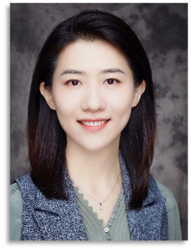
演讲内容摘要
随着AI/ML等前沿技术的快速演进，医药研发正迎来数智化转型的重要机遇。复星医药围绕AI在信息洞察、决策支持、药物发现、临床开发、上市营销等全生命周期中的应用，系统构建了以PharmAID决策智能体为代表的数智化平台，推动从数据资产管理到智能决策的深度融合。通过分享平台架构、场景落地及价值评估等方面的实践经验，助力行业共同探索AI赋能医药研发的创新路径与协同生态。
演讲嘉宾简介
邱婧君，曾就职于美国耶鲁大学医学院、默沙东、拜耳和百济神州。十几年不同地区、不同治疗领域临床试验研究的丰富经验；参与从药物临床研发战略规划到临床试验及上市后研究的各重要阶段，包括早研转化与BD尽调项目；同时负责集团AI+医药项目的战略规划与推进。现任中国统计理论与方法、中国医药统计与教育、中国药促会、CSCO、北京统计协会等专委会委员，并支持不同课题工作小组，如CDE若干指导原则、IFPMA ICH-E20Adaptive design、E17-MRCT、E9(R1)-Estimand蓝皮书工作组等。作为DIA/CMAC/AIIA(国际人工智能产业联盟)等统计与数据科学工作组核心成员，长期热心推动医药社区各种活动，如组织年会及定量科学论坛、统计学术研讨会、OnSite肿瘤研究者培训课程、能力建设学院统计方法学培训、数据建模大赛和年会壁报评选、教材和书籍编写等。
17:10-17:35基于人工智能的临床研究效率提升
赵杨 | 南京医科大学教授
演讲内容摘要
Applying artificial intelligence to the design, operation, analysis, and interpretation of clinical research will help improve efficiency. In this report, we will review the current applications of artificial intelligence, especially large language models, in the field of enhancing clinical research efficiency. We will also introduce our work in areas such as protocol review and virtual digital twins.
演讲嘉宾简介
赵杨，博士，教授，博士生导师。2009年获南京医科大学流行病与卫生统计学系博士学位。2010年至2012年在美国美国哈佛大学公共卫生学院环境流行病学系主要从事肺癌遗传数据的研究。曾在Nature Communications, AJRCCM, International Journal of Epidemiology, BMC Medicine，Cell Reports，中华流行病学杂志，中国卫生统计等杂志以第一/通讯作者发表学术论文90余篇，合计发表学术论文350余篇。研究方向包括复杂生物医学数据整合分析及因果推断方法研究、临床试验中的统计方法、真实世界研究中的统计理论与方法。先后主持国自然项目5项，国家重点研发计划课题1项。作为统计专家或独立数据监察委员会专家，参与过数十个创新药物和疫苗的临床研发工作。现任中国卫生信息与健康大数据学会卫生统计学教育委员会主任委员，中华预防医学会生物统计学分会副主任委员，中国临床肿瘤学会生物统计专家委员会副主任委员、中国医药教育学会医药统计专委会副主任委员，江苏省预防医学会卫生统计学专委会主任委员。在新冠病毒肺炎疫情期间，参加了国家有关新型冠状病毒肺炎防控、新冠肺炎疫情预测预警和防控政策调整模型研究等工作。